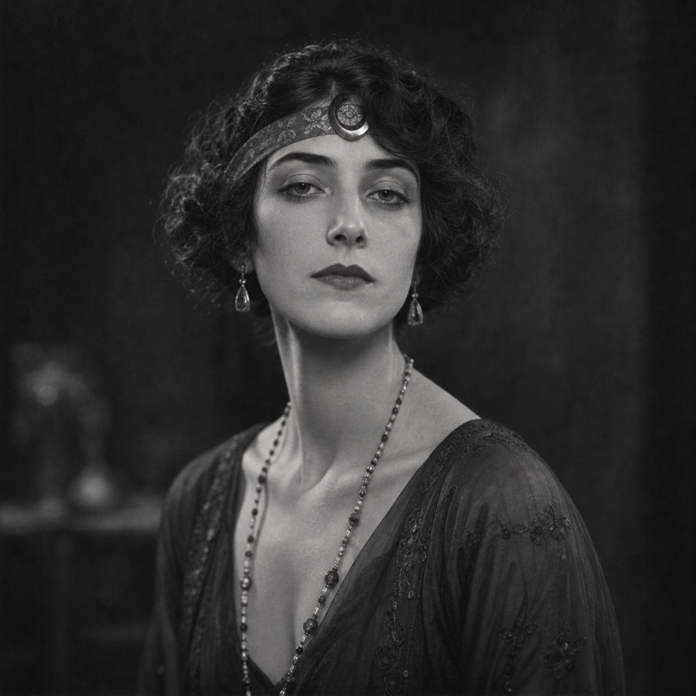

Vivian Hale
(375 Points)
Female; Age 27; 5'3", 124 lbs; Young, impeccably dressed, and almost too composed. Vivian carries herself like someone raised to be welcomed everywhere that matters, but the war left her with a steadier gaze than her age should allow. She looks like a bright society hostess until something goes wrong; then she starts sounding like a nurse and everyone else starts obeying.
| ST: 9/11 [-10] | IQ: 18 [125] | Speed: 6.50 |
| DX: 14 [45] | HT: 12/11 [20] | Move: 6 |
| Dodge: 6 |
Advantages
Beautiful [15] (Reaction: +2/+4); Charisma +2 [10] (Reaction: +2); Contacts (Arts Reporter) (Skill 15, 12 or less, Somewhat Reliable) [4]; Contacts (Hospital Matron) (Skill 12, 9 or less, Somewhat Reliable) [1]; Contacts (Hotel Concierge / Head Waiter) (Skill 12, 12 or less, Somewhat Reliable) [2]; Contacts (Society Columnist) (Skill 12, 9 or less, Somewhat Reliable) [1]; Eidetic Memory 1 [30]; Empathy [15]; Lang: English (Native) [0]; Lang: French (Accented Spoken/Accented Written) [4]; Lang: Hebrew (Broken Spoken/Accented Written) [3]; Lang: Russian (Accented Spoken/Accented Written) [4]; Lang: Yiddish (Accented Spoken/Broken Written) [3]; Patron (Followers of the Right Hand) (15 or less) [60] (Equipment: Standard, +5; Special Qualities (Access to Magic in Non-magical World): Very Unusual, +10; Secret: -5; Subtraction (Minimal Intervention): -5); Filthy Rich [50] (Starting Wealth: $75,000); Alertness +1 [5]; Common Sense [10]; Patron (French healer society) (12 or less) [40] (Equipment: Expensive, +10; Special Qualities: Very Unusual, +10; Unwilling: -5; Secret: -5); Reputation +1 (Trusted operator in NYC charity organizations) [5] (Reaction: +1); Strong Will +2 [8] (Will: 20); Voice [10] (Reaction: +2).
Disadvantages
Compulsive Behavior (Must intervene when someone is gravely hurt) [-10]; Duty (15 or less) [-25] (Involuntary: -5; Subtraction (Extremely Hazardous): -5); Enemy (Unknown Enemies of FRH) [-60] (Unknown: -5; Subtraction (Access to Magic in Non-magical World): -15); Flashbacks [-10]; Guilt Complex [-5]; Nightmares [-5]; Secret (Psionic healing gift) [-20]; Sense of Duty (Innocents) [-10]; Sense of Duty (Patients) [-5].
Quirks
Quirk (Goes clinically calm the moment someone is hurt); Quirk (Keeps private notebooks on every person she has treated); Quirk (Lights Sabbath candles when she can, even while traveling); Quirk (Never forgets a face, a room, or a slight); Quirk (Straightens flowers and table settings without noticing). [-5]Powers
Psionic Healing 8 [24].
Skills
Accounting-18 [2]; Acting-17 [½]; Administration-18 [1]; Area Knowledge (New York High Society)-18 [½]; Area Knowledge (Paris)-18 [½]; Bard-21* [½]; Bridge-18 [½]; Chess-18 [½]; Dancing-13 [1]; Detect Lies-20* [½]; Diagnosis/TL6-18 [2]; Diplomacy-19* [1]; Fast-Talk-17 [½]; First Aid/TL6-18 [½]; Flower Arranging-18 [½]; History (Russia)-15/21 [½] (Specialty: Russia); History (American)-15/21 [½] (Specialty: American); Law-16 [½]; Law (Contract)-18 [2]; Leadership-19* [½]; Literature (Russian)-16 [½]; Merchant-19 [2]; Metabolism Control-16 [1] (Fatigue: 0, Area: self, Maintain: var., Page: P15); Musical Instrument (Keyboard)-16 [½]; Performance-20* [1]; Physician/TL6-17 [1]; Poetry-17 [½]; Politics-20* [1]; Psionic Healing-19 [6] (Fatigue: var., Range: touch, Area: subject, Page: P15); Psychology-20* [1]; Research-20 [3]; Savoir-Faire-21* [3]; Sense Aura-19 [6] (Fatigue: 0, Range: 7 yd, Area: self, Maintain: min., Page: P16); Singing-13* [½]; Streetwise-17 [½]; Teaching-18 [1]; Writing-17 [½].
*Cost modifiers: Charisma, Voice, Empathy.
Description
Vivian Hale was raised to move through important rooms as though she had always belonged there, and in one sense she had. New York money, family caution, trust-protected independence, and the polished education of a woman expected to be received everywhere that mattered gave her the social surface she still wears so well. But the war altered what that surface meant. In 1918 she was young enough to still seem bright and ornamental to people who had not watched her work, and old enough to spend that brightness in wards, convalescent rooms, and medical crises where breeding and money collapse quickly under blood loss, morphine, shell shock, and fear. She came back from that service with her polish intact and her innocence badly damaged, which is the best thing that could have happened to the character.Vivian is not simply a rich woman with manners. She is a social systems operator. She understands committees, donor circles, hospital boards, trustees, family reputations, introductions, patronage, and the kinds of rooms where people ruin one another politely. She also knows how frightened human beings sound when they are trying to stay elegant, because she has heard it in both battlefield wards and drawing rooms. That combination makes her unusually effective. She can steady a delirious patient, redirect a board, quiet a scandal, and extract the truth from a family crisis without ever seeming to raise her voice. If Celia Ward reads the lower circuits of grief and fraud, Vivian reads the upper ones: salons, galleries, private clinics, old-family homes, and the donor-wing anatomy of denial.
Her healing gift belongs naturally inside that life. It does not replace her vocation; it reveals how much of that vocation was already about touch, triage, composure, and intimate authority. The hidden French healer society recognized that quickly, finding in Vivian not a decorative socialite who happened to be useful, but the rare woman who could move through elite spaces without mistaking elegance for goodness. Her beauty, voice, memory, empathy, and terrifying calm all serve the same engine. She can enter private grief through the front door because society already opens it for her, and once inside she has both the moral discipline and the occult gift to decide whether she is there to comfort, to heal, or to quietly force a collapsing room back into order.
For a new player, Vivian should feel beautiful but not safe. She is young enough to surprise people, wealthy enough to be underestimated for the wrong reasons, and war-sobered enough to see through every polite fiction that money prefers. When something goes wrong, she stops sounding like a hostess and starts sounding like a nurse, and people obey before they have time to realize how much power they have just handed her.